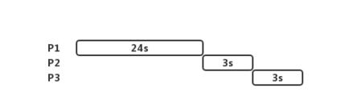
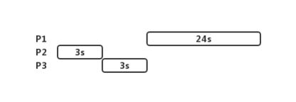
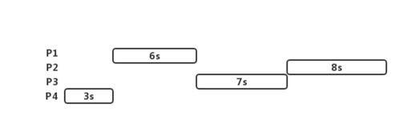
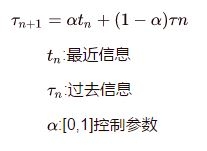

CPU调度算法
一、先到先服务调度（FCFS）
FCFS:先请求CPU的进程先得到CPU时间片。
- 算法上可以采用FIFO队列实现。
缺点：平均等待时间通常较长。
例如：
场景1：

AWT=(0+24+27)/3=17s
场景2：

AWT=(0+3+6)/3=3s
FCFS调度算法是非抢占的，一旦CPU被分配给了一个进程，该进程就会一直拥有CPU，直到程序终止或请求I/O才会释放CPU。
二、最短作业优先调度（SJF）
SJF:选取进程就绪队列中下一个CPU区间最短的进程，当两个进程拥有相同的CPU区间时采用FCFS调度。
例如：
场景1：

AWT=(0+3+9+16)/4=7s
SJF比FCFS要好，但是实现时难点在于如何获得下一个CPU区间长度。
- 对于长期调度：将用户提交进程时指定的进程时间极限作为长度；
- 对于短期调度：认为下一个CPU区间与之前的相似；
例如：一种常用的预测方法：指数平均
